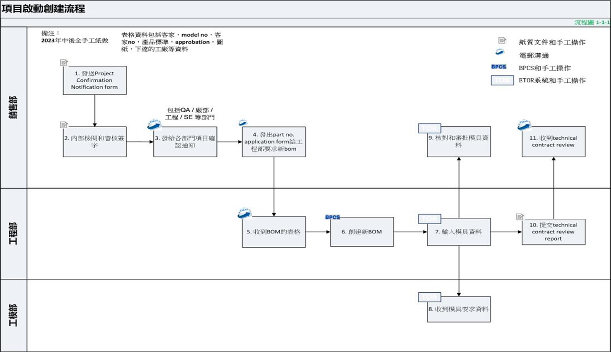
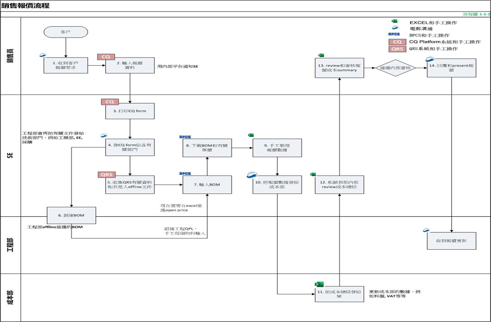

流程图图片上传
上传流程图图片 · AI 智能识别分析
拖放流程图图片或点击选择
支持 PNG, JPG, JPEG, BMP, TIFF, GIF, WEBP，一次最多 10 张
示例图片：

1.png
2.png
正在调用模型进行流程图识别...
流程图识别结果
AI 流程图识别分析展示
| 流程 | 流程说明 | 流程ID | 流程描述 | 操作方式 | 部门 |
|---|---|---|---|---|---|